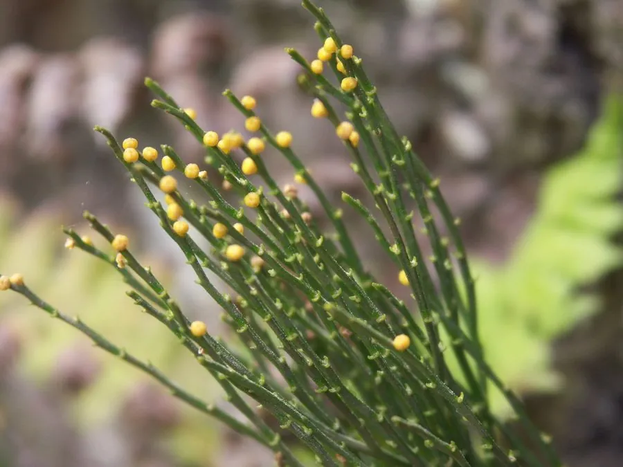

蕨类与裸子植物 · 植物界
松叶蕨 Psilotum nudum

松叶蕨科松叶蕨属小型蕨类，无根、茎二叉分枝，形似松针，是最原始的维管植物之一，被列为国家二级保护植物。
- 分类
- 门蕨类植物门纲松叶蕨纲目松叶蕨目科松叶蕨科属松叶蕨属
- 栖息环境
- 海拔 1000 米以下的林下石缝与树干基部，喜温暖湿润半阴
- 地理分布
- 中国广东、广西、福建、海南、云南、贵州、四川、台湾；日本、东南亚、澳大利亚
- 保护级别
- 国家二级重点保护野生植物；IUCN 暂无评估
物种志
松叶蕨为松叶蕨科松叶蕨属小型蕨类，植株高十五至五十厘米，无真正的根，靠根状茎和菌根吸收养分。茎绿色，多次二叉分枝，表面有棱，小枝上的叶退化成鳞片状，形似松针。孢子囊三枚聚生于叶腋，球形，黄色，孢子期夏秋季。
松叶蕨分布于中国广东、广西、福建、海南、云南、贵州、四川、台湾等地，日本、东南亚、澳大利亚也有，多生于海拔一千米以下的林下石缝和树干基部。它喜温暖湿润和半阴环境，适宜疏松透气的腐殖质土壤。无根、二叉分枝、孢子囊聚生，是研究早期维管植物演化的重要材料，被视为活化石；株形清雅，也可作盆栽观赏。由于野生资源稀少，被列为国家二级重点保护野生植物。
形态与习性
- 株高15–50 cm，茎二叉分枝
- 叶形退化成鳞片状，似松针
- 孢子期夏秋季，囊三枚聚生
- 光照喜半阴散射光
- 水分喜湿润，忌积水
- 土壤疏松的腐殖质土
- 主要用途科研材料、盆栽观赏
趣味知识
- 松叶蕨没有真正的根，靠地下的根状茎与真菌共生吸收养分。
- 它的茎一次又一次地二叉分枝，形态在维管植物中非常原始。
- 松叶蕨的孢子囊三枚聚生在一起，形成黄色的小球，十分特别。